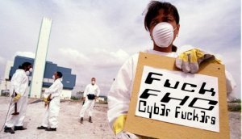
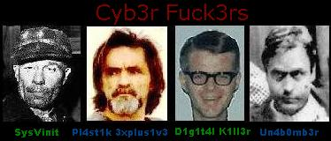

FHC E O FMI SÃO OS RESPONSÁVEIS POR 10 MILHÕES DE DESEMPREGADOS
O Brasil passa pela mais grave crise de emprego de
toda sua história. De acordo com dados do Dieese/Seade, são cerca de 10 milhões de
trabalhadores sem emprego em todo o país.

CHEGA DE DESEMPREGO, FORA FHC !
O presidente da República, Fernando Henrique Cardoso, tentou evitar que o Ministério Público, a Polícia Federal e o Senado Federal investigassem o caso Marka/FonteCindam, que envolvia a participação de banqueiros e da diretoria do Banco Central, onde mais uma vez o presidente FHC deu 10 milhões de reais a 7 banqueiros. A dívida externa é hoje U$$ 231,6 bilhões. Somente nos cinco primeiros meses deste ano, o Brasil já gastou U$$ 5,855 bilhões com pagamento de juros. Demonstrando que a subserviência do governo FHC ao FMI está tirando da boca do trabalhador para dar ao capital internacional. Metade deste dinheiro pago aos banqueiros internacionais, dava para assentar 250 mil famílias de agricultores sem terra, criando cerca de 750 mil empregos diretos e 2 milhões de empregos indiretos.
FORA FHC E O FMI !
O presidente FHC dilapidou quase todo nosso patrimônio, vendendo as Estatais e financiando os compradores com nosso dinheiro. Não bastasse, as escutas telefônicas apresentadas nos meios de comunicação, demonstram o favorecimento de determinados grupos na privatização da Telebrás, onde o próprio presidente FHC interferiu de forma direta para beneficiar o Banco Opportunity. Procure o abaixo-assinado para apurar esta maracutaia.

PELA CPI DA TELEBRÁS, FORA FHC !
Não dá mais para aceitar esse governo, 63 % da população de Fortaleza na última pesquisa, considerou este governo ruim ou péssimo. Vamos participar dos atos e manifestações nas cidades, bairros e em todo lugar. Vamos botar nossa indignação para fora.
Assinam pelo fora FHC e o FMI:
CUT/CE - PT - PC do B - PSTU - PSB - PCB - Sintsef - Sintufce - Mova-se - Comerciários -
Const. Civil - Fetrace - Sind. Saúde - Sinprece - Sapateiros - Sinttel - Metalúrgicos
Uma Crítica ao Liberalismo e ao Neo-Liberalismo
O Brasil vem enfrentando uma séria crise econômica desde o final de 1997, quando a crise na Ásia abalou a economia mundial.
Desde então o país e principalmente o povo vem engolindo a saliva amarga de uma recessão até os dias de hoje e sem data para terminar. Segundo alguns economistas, nunca o país em toda sua história de república passou por uma crise tão séria e tão difícil de ser resolvida, tudo por causa de uma pessoa: FHC ou melhor dizendo o presidente Fernando Henrique Cardoso.
Ele enganou o povo brasileiro durante 3 anos (94 à 97) nos passando uma falsa sensação de estabilidade econômica, crescimento e de aumento do poder aquisitivo. Então em 1997 veio a bomba, sua política podre de alianças corruptas despertou a desconfiança dos investidores e especuladores internacionais que logo após algum tempo retiraram seus capitais do nosso país deixando a economia sem rumo. O governo devido ao enfraquecimento da Poupança Nacional (ocorrido por amadorismo dele próprio), se tornou altamente dependente do capital estrangeiro o que deixou a economia brasileira muito vulnerável a ataques especulativos. Depois veio o alto déficit público, que ocasionou seguidos PACOTES de medidas, e explorou de tal modo a população que a muito tempo não se via.
O Governo passou a sacrificar o povo brasileiro com sucessivos aumentos de impostos e de combustíveis, o que tornou o custo de vida hoje no Brasil um dos mais altos do mundo, também manipulou os índices de inflação para que não ocorresse aumento nos salários da classe trabalhadora em geral, também conseguiu acabar com a mobilidade estudantil para não correr riscos de ser deposto pela classe que hoje vive acuada, temendo a privatização das universidades públicas e que perdeu aquela coragem de sair as ruas para protestar lutar por reformas e até mesmo de enfrentar a polícia como na Coréia do Sul.
O Governo com seus métodos muitas vezes ILÍCITOS, modificou a constituição, mas infelizmente não foi para o benefício do povo mas sim para o próprio e para seus aliados (PFL, PSDB etc. ...)
Bom por falar de PFL lembramos de ACM, que é o homem que realmente controla o país, é aquele mesmo que brigou no congresso a tapas com um outro parlamentar, aquele que é dono da TV GLOBO DA BAHIA, que coincidentemente é aquele mesmo que quando a globo foi criada em 1965, 1 ano após o começo da ditadura MILITAR era MINISTRO DAS COMUNICAÇÕES do regime, aquele de passado estrondoso que dizem que ele M@T*".
Um dos piores erros de FHC foi a aliança com o PFL, e com a TV GLOBO, ROBERTO MARINHO ou mais conhecido no exterior como CIDADÃO KHANE (Se você quiser saber mais sobre a verdadeira história de Roberto Marinho Clique Aqui .
Agora raciocinem: Um Sociólogo, que foi exilado, que se considera culto, é o mesmo homem que não tem olhos para o povo, entregou o Brasil nas mãos dos USA, FMI e ACM, tirou o pouco de educação e de comida do povo Brasileiro possuía.Está passando da hora, para que o povo se una com os membros da comunidade, principalmente do meio estudantil em geral, para que haja mobilizações de nível nacional para lutar contra nossos inimigos em comum. O conteúdo desta página é totalmente público, podendo ser imprimido, divulgado, utilizado como contexto e de outras formas desde que não seja alterado sua temática original.


"Nemo me impune
lacessit"
Para FHC - "In pace requiescat"
Msg de Un4b0mb3r p/ Friends...
Para o pessoal do ¿TPLM...Billy joe, Superturkey, Hilton, etc....
MARIANA.....Desculpe c eu fui grosso com vc, eu gosto muito de vc, mas naum vamus perder a amizade...o mesmo pra Natália !!!
Bruno CUZAUM !!!!! - æ Rodrigo.....